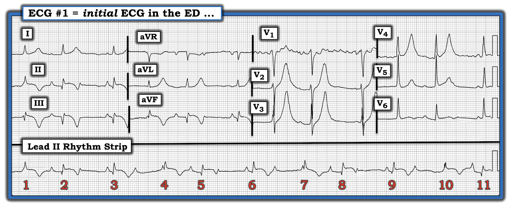
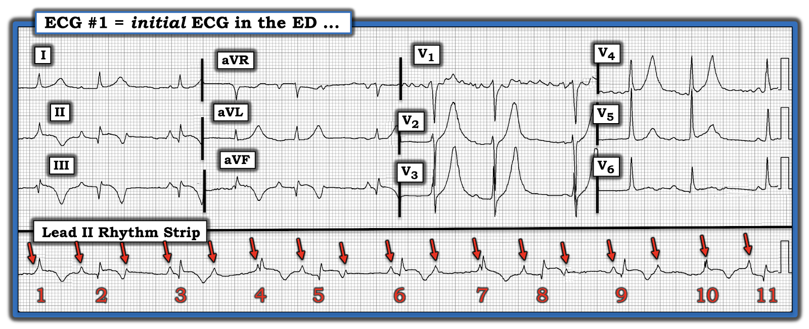
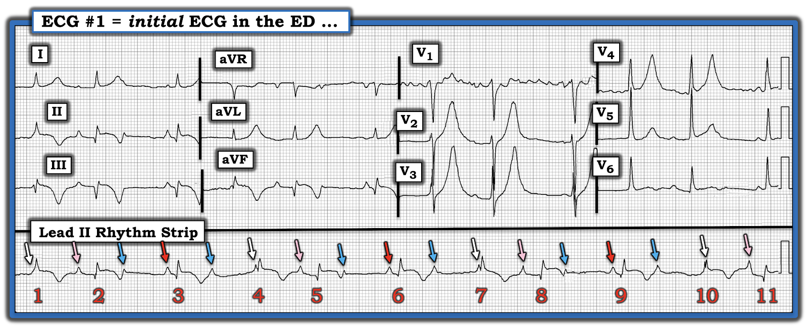
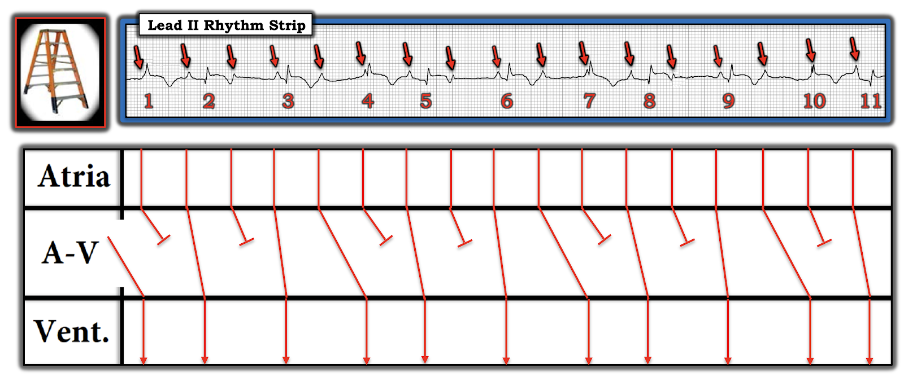
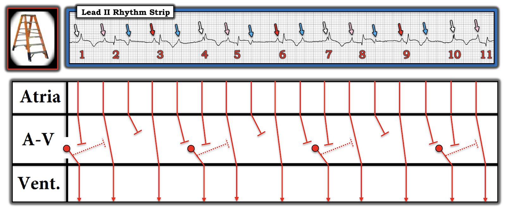

ECG Blog #311 — Thủ phạm gây ra nhịp này?
Điện tâm đồ ở Hình-1 — được ghi từ một người đàn ông trung niên đến khám vì khó thở. Không đau ngực. Giả sử bệnh nhân ổn định huyết động:
- BẠN sẽ đọc nhịp ở Hình-1 như thế nào?
- Bạn cân nhắc những chẩn đoán nào?
LƯU Ý: Đây là một ca khó! Cả nhịp lẫn điện tâm đồ 12 chuyển đạo đều có những điểm phức tạp không có lời giải đơn giản. Tôi hy vọng giúp bạn hiểu sâu hơn bằng cách trình bày quá trình suy nghĩ của mình theo đúng trình tự tôi đã dùng để tiếp cận bản ghi này. BẠN có sẵn sàng nhận thử thách không?


Suy nghĩ của tôi về Hình-1:
Theo bản năng áp dụng Cách tiếp cận Ps, Qs, 3R để đánh giá nhịp ở Hình-1 (Xem ECG Blog #185) — ấn tượng ban đầu của tôi về bản ghi này (mà tôi có được trong vòng khoảng một phút đầu tiên khi nhìn điện tâm đồ này) — như sau:
- Nhịp là nhịp trên thất (tức là, phức bộ QRS có vẻ hẹp ở cả 12 chuyển đạo).
- Nhịp không đều hoàn toàn. Dù vậy — quả thật có vẻ có nhịp theo "nhóm" (group beating) (với các khoảng R-R dài hơn và ngắn hơn có thời khoảng lặp lại).
- Sóng P có hiện diện. Tôi nghi rằng nhịp nhĩ có thể đều.
- Ít nhất một số sóng P có vẻ được dẫn truyền (vì một số khoảng PR lặp lại nhiều lần trong bản ghi này!).
- NHẬN ĐỊNH ban đầu của tôi: Các dấu hiệu nhịp theo nhóm — với sóng P trông như có thể đều — QRS hẹp — và nhiều khoảng PR có thời khoảng tương tự nhau — khi gộp lại, gợi ý rằng nhiều khả năng có một kiểu dẫn truyền Wenckebach nào đó (nếu không phải là blốc AV độ 2 loại Mobitz I).
Còn điện tâm đồ 12 chuyển đạo thì sao?
Đến đây tôi thấy mình cứ liên tục nhìn vào các sóng T cao quá mức ở các chuyển đạo trước tim (anterior) của Hình-1. Từ góc độ lâm sàng — ưu tiên cao nhất khi đánh giá bất kỳ ca nào là nhanh chóng xác định LIỆU có cần điều trị ngay không. Trong ca hôm nay — việc làm rõ nhịp vượt quá phân tích ngắn gọn ở trên có lẽ là không cần thiết cho các quyết định điều trị ban đầu. Chừng nào bệnh nhân còn ổn định (và tần số tim chung không giảm) — ít có khả năng cần đến máy tạo nhịp. Vì vậy — ưu tiên của chúng ta chuyển sang đánh giá điện tâm đồ 12 chuyển đạo xem có cần thông tim ngay và/hoặc điều trị tiêu sợi huyết hay không.
- ĐIỂM THEN CHỐT (PEARL) #1: Một lý do khác để lúc này chuyển sự chú ý sang đánh giá điện tâm đồ 12 chuyển đạo — là làm vậy có thể giúp đánh giá nhịp (như tôi sẽ trình bày ngay sau đây).
Đánh giá điện tâm đồ 12 chuyển đạo:
- Có điện thế thấp (low voltage) ở các chuyển đạo chi (tức là, biên độ QRS không vượt quá 5 mm ở bất kỳ chuyển đạo chi nào).
- Trục mặt phẳng trán bình thường (Có lẽ gần 0 độ — dù khó đánh giá do điện thế thấp và sóng Q có độ sâu thay đổi ở các chuyển đạo dưới).
- Không có lớn các buồng tim.
- Rõ ràng đã có nhồi máu cơ tim (MI) thành dưới gần đây (tức là, có sóng Q ở mỗi chuyển đạo dưới — kèm theo đoạn ST dạng vòm (coving), ST chênh lên ít nhất 1 mm — và sóng T đảo ngược sâu).
- Tăng tiến sóng R (R wave progression) ở các chuyển đạo ngực là bình thường — với vùng chuyển tiếp (nơi sóng R trở nên cao hơn độ sâu của sóng S) — xảy ra bình thường giữa các chuyển đạo V2-đến-V3.
- Sóng T cao quá mức và nhọn ở các chuyển đạo trước tim V2, V3 và V4 (với sóng T = cao 15 mm ở chuyển đạo V3).
- Sóng T cũng cao không tương xứng ở các chuyển đạo I và aVL.
- Sóng ST-T dẹt ở chuyển đạo V6.
Nhận định của tôi về điện tâm đồ 12 chuyển đạo:
Dù không có đau ngực — bệnh nhân này đã bị một MI thành dưới gần đây. Không có thêm bệnh sử — rất khó xác định biến cố này xảy ra khi nào. Sóng Q đã khá sâu (đặc biệt ở các chuyển đạo III và aVF). ST chênh lên vẫn còn — dù mức ST chênh lên gần như bị lấn át bởi sóng T đảo ngược rất sâu, đối xứng ở mỗi chuyển đạo dưới. Hình ảnh ngược lại kiểu soi gương với sóng T đảo ngược ở chuyển đạo dưới này được thấy ở hình dạng của sóng T cao không tương xứng ở chuyển đạo aVL.
- Bức tranh tổng hợp ở điện tâm đồ #1 phù hợp với một STEMI thành dưới đã hoàn tất do tắc cấp RCA (Right Coronary Artery — động mạch vành phải) hoặc có thể LCx (Left Circumflex — động mạch mũ trái) — nay có sóng T tái tưới máu ở các chuyển đạo dưới
- Phải thừa nhận rằng các sóng T cao, nhọn ở chuyển đạo trước tim giống sóng T deWinter về kích thước và hình dạng. Tuy nhiên, giả định đây là sóng T deWinter sẽ hàm ý có tổn thương cấp ở một động mạch vành thứ 2 (tức là, động mạch LAD = Left Anterior Descending coronary artery — động mạch liên thất trước). Tôi nghĩ nhiều khả năng hơn hẳn là các sóng T cao ở chuyển đạo trước tim này là một phần của cùng một quá trình cấp (tức là, tắc cấp RCA hoặc LCx — và không phải LAD).
- MI thành dưới cấp thường đi kèm tổn thương thành sau — khi đó các chuyển đạo trước tim cho thấy hình ảnh soi gương của các biến cố xảy ra ở thành sau thất trái. Vì vậy — các chuyển đạo trước tim cho thấy ST chênh xuống (thay vì ST chênh lên) khi có MI thành sau cấp — và các chuyển đạo trước tim cho thấy sóng T cao, nhọn (thay vì sóng T đảo ngược sâu) khi thành sau được tái tưới máu.
- Tổng hợp lại tất cả: Tôi nghi bệnh nhân hôm nay đã bị một STEMI dưới-sau gần đây — và nay đang có sóng T tái tưới máu ở các vùng chuyển đạo này (tức là, dưới dạng sóng T đảo ngược sâu ở các chuyển đạo dưới — và sóng T cao, nhọn ở các chuyển đạo trước tim).
- Thêm bệnh sử — troponin nhiều lần — siêu âm tim — và các điện tâm đồ theo dõi đều có thể góp phần hiểu rõ hơn về thời điểm xảy ra biến cố của bệnh nhân này. Có thể có chỉ định thông tim — nhưng với hình ảnh điện tâm đồ ở Hình-1 (gợi ý MI này không phải vừa mới xảy ra) — có lẽ sẽ không cần thông tim cấp cứu chừng nào bệnh nhân còn ổn định.
ĐIỂM THEN CHỐT (PEARL) #2: Thường gặp blốc AV độ 2 loại Mobitz I đi kèm MI thành dưới cấp hoặc gần đây. Vì vậy — tôi ngay lập tức nghi ngờ một dạng nào đó của rối loạn dẫn truyền này trong bối cảnh MI thành dưới gần đây hoặc cấp mỗi khi tôi thấy nhịp theo nhóm với nhịp nhĩ đều và nhiều khoảng PR tương tự nhau ở đầu nhiều nhóm. Đây chính là tình huống của nhịp hôm nay (Xem bên dưới).
====================================
Xem kỹ hơn Nhịp hôm nay:
Tôi thấy việc đánh giá nhịp hôm nay cực kỳ khó. Ý của tôi trong phần bàn luận ở trên — là bất kể bạn có xác định được nguyên nhân chính xác của từng nhát trong dải nhịp chuyển đạo II dài ở Hình-1 hay không — đánh giá cơ bản mà tôi mô tả ở trên (tức là, nhịp trên thất có nhịp theo nhóm này, đi kèm MI thành dưới gần đây, nhiều khả năng thể hiện một dạng nào đó của blốc AV độ 2 Mobitz I) — là quá đủ cho xử trí ban đầu bệnh nhân này.
Dù vậy — Hãy xem kỹ hơn.
CÂU HỎI:
- Sóng P ở Hình-1 có đều không?
TRẢ LỜI — Xem Hình-2 ...


ĐIỂM THEN CHỐT (PEARL) #3: Như tôi vẫn thường nhấn mạnh — tôi nhận thấy việc đơn giản là xác định tất cả sóng P là vô giá để dẫn tôi tới chẩn đoán đúng.
- Dùng compa đo (calipers) giúp quá trình này dễ dàng hơn nhiều. Đặt compa bằng khoảng P-P giữa bất kỳ 2 sóng P nào mà bạn thấy rõ trên dải nhịp chuyển đạo II dài (Ví dụ — Đặt compa bằng khoảng P-P giữa mũi tên ĐỎ thứ 2 và thứ 3 ở Hình-2 — hoặc giữa mũi tên ĐỎ thứ 3 và thứ 4). Làm như vậy cho phép bạn dễ dàng "dò bước" khoảng này suốt toàn bộ dải nhịp (các mũi tên ĐỎ ở Hình-2).
Các bước tiếp theo của tôi trong phân tích nhịp:
Giờ đã xác nhận nhịp nhĩ là đều (với tần số hơn 100/phút một chút) — hãy NHÌN lại ở Hình-2 các phức bộ QRS xuất hiện ở cuối mỗi khoảng R-R dài hơn (tức là, ở các nhát #3, 4, 6, 7, 9 và 10).
- Có phải mỗi nhát này đều có sóng P đi trước không? NẾU có — Khoảng PR của các sóng P đứng trước các nhát #3,4; 6,7; và 9,10 có đủ dài để dẫn truyền không?
- Khoảng PR có giống hệt nhau trước bất kỳ nhát nào trong số này không?
- Cuối cùng — NHÌN xem LIỆU có sóng P đi trước các nhát #2, 5, 8 và 11 không? NẾU có — Khoảng PR trước mỗi nhát này giống hay khác nhau?
- ĐIỂM THEN CHỐT (PEARL) #4: Bạn đang tìm các mối liên hệ gợi ý rằng sự sắp xếp trên dải nhịp chuyển đạo II dài này không phải do ngẫu nhiên! Tìm thấy những mối liên hệ như vậy rất đặc trưng cho khả năng có một dạng blốc Wenckebach nào đó!


TRẢ LỜI:
Tôi ghi nhận các mối liên hệ sau giữa sóng P trên dải nhịp chuyển đạo II dài — và các phức bộ QRS kế cận của chúng (Hình-3):
- Các sóng P được đánh dấu bằng mũi tên TRẮNG ở Hình-3 đều xuất hiện cùng lúc với điểm khởi đầu phức bộ QRS của các nhát #1, 4, 7 và 10. Khoảng PR của mỗi sóng P mũi-tên-TRẮNG này rõ ràng là quá ngắn để dẫn truyền.
- Các sóng P được đánh dấu bằng mũi tên ĐỎ đều có cùng một khoảng PR. Đây là các sóng P đứng trước các nhát #3, 6 và 9. Tôi đo được khoảng PR trước các nhát này = 0.14 giây, Đây là khoảng PR đủ dài để dẫn xuống thất — dù nó ngắn-hơn-mức-thường-thấy ở một bệnh nhân có Wenckebach AV độ 2. Vì khoảng PR trước mỗi nhát này bằng nhau — tôi giả định rằng các sóng P mũi-tên-ĐỎ này có được dẫn truyền (nhưng tôi không thể chắc chắn điều này vì khoảng PR tương đối ngắn).
- Các sóng P được đánh dấu bằng mũi tên HỒNG cũng đều có cùng một khoảng PR, dù là khoảng PR dài hơn so với các sóng P mũi-tên-ĐỎ . Đây là các sóng P đứng trước các nhát #2, 5, 8 và 11. Tôi đo được khoảng PR trước các nhát này = 0.24 giây. Tôi cho rằng mỗi sóng P mũi-tên-HỒNG này chắc chắn có được dẫn xuống thất.
- Còn lại 6 sóng P được đánh dấu bằng mũi tên XANH — tất cả đều xuất hiện gần điểm giữa của một trong các khoảng R-R dài hơn. Tôi hoàn toàn không chắc liệu các sóng P mũi-tên-XANH này được dẫn truyền với khoảng PR dài hơn nhiều — hay chúng không được dẫn truyền.
LƯU Ý: Nhịp hôm nay không điển hình cho một blốc AV độ 2 Mobitz I đơn thuần vì: i) Khoảng PR trước phức bộ QRS ở cuối các khoảng R-R dài hơn không hằng định như thường thấy trong Mobitz I điển hình (tức là, mũi tên TRẮNG và ĐỎ xen kẽ nhau trước các nhát #1, 3, 4, 6, 7, 9, 10); ii) Khoảng PR của các sóng P mũi-tên-ĐỎ ngắn hơn mức thường thấy ở các nhát được dẫn truyền trong Mobitz I ( = 0.14 giây); và, iii) Chúng ta không bao giờ thấy 2 sóng P liên tiếp chắc chắn được dẫn truyền và có khoảng PR tăng dần.
- Đáng tiếc — dải nhịp chuyển đạo II dài trong bản ghi hôm nay không được ghi đồng thời với điện tâm đồ 12 chuyển đạo ở phía trên. Điều này làm mất một manh mối tiềm năng rất hữu ích — đó là các nhát thoát bộ nối đôi khi có thể phân biệt với các nhát được dẫn truyền vì chúng có thể có hình dạng QRS hơi khác đi.
Minh họa giản đồ bậc thang (laddergram) (Vượt ra ngoài phần cốt lõi):
Trong nỗ lực giải thích cơ chế của rối loạn nhịp hôm nay — tôi đề xuất 2 lời giải khả dĩ dưới đây:
Tôi trình bày cách giải thích đơn giản nhất cho nhịp hôm nay ở Hình-4a:
- Phần lớn các trường hợp Wenckebach AV (tức là, blốc AV độ 2 Mobitz I) — khoảng PR tăng dần qua các nhát liên tiếp cho đến khi một sóng P không được dẫn truyền. Tuy nhiên, đôi khi — sinh lý đường dẫn truyền kép trong nút AV có thể đang hoạt động (Mani BC & Pavri BB: Dual AV Nodal Pathways Physiology — Indian Pacing Electrophysiol 14[1]:12-25, 2014). Khi điều này xảy ra — khoảng PR có thể thay đổi (tăng) đột ngột từ nhát này sang nhát kế tiếp do dẫn truyền chuyển đột ngột từ đường nhanh (tạo ra khoảng PR ngắn hơn) — sang dẫn truyền qua đường chậm hơn (tạo ra khoảng PR kéo dài đột ngột). NẾU đây là cơ chế của rối loạn nhịp hôm nay — nó sẽ trông giống giản đồ bậc thang ở Hình-4a.


Tôi đề xuất cách giải thích khả dĩ thứ 2 cho nhịp hôm nay ở Hình-4b:
- Có thể lý do các sóng P mũi-tên-TRẮNG không được dẫn truyền — là vì một nhát "thoát" bộ nối xuất hiện trước khi các sóng P này có cơ hội dẫn truyền. Vì khoảng R-R đi trước các nhát #4,7,10 dài hơn 5 ô lớn một chút — điều này tương ứng với tần số "thoát" bộ nối ~58/phút (tần số này nằm trong khoảng tần số thoát thông thường 40-60/phút của nút AV).
- Như thể hiện trong giản đồ bậc thang đề xuất của tôi ở Hình-4b — các nhát thoát bộ nối này có thể được đặt ở thời điểm đồng thời chặn sự dẫn truyền của các sóng P mũi-tên-XANH xuất hiện ngay trước các sóng P mũi-tên-TRẮNG.
- Các nhát thoát bộ nối này cũng có thể giải thích vì sao khoảng PR của các sóng P mũi-tên-HỒNG dài hơn khoảng PR của các sóng P mũi-tên-ĐỎ (như gợi ý bởi đường chấm biểu thị dẫn truyền ngược dòng từ các nhát bộ nối này trong Tầng Nút AV, làm kéo dài dẫn truyền qua nút AV của các sóng P mũi-tên-HỒNG).
- NHƯNG — Để giản đồ bậc thang đề xuất ở Hình-4b là đúng — các sóng P mũi-tên-ĐỎ phải dẫn truyền được các nhát #3,6,9 với khoảng PR tương đối ngắn = 0.14 giây (điều này hơi bất thường khi đi kèm Wenckebach AV).


ĐIỂM THEN CHỐT (PEARL) #5: Con đường đạt tới trình độ chuyên gia trong đọc rối loạn nhịp đòi hỏi phải thấm câu nói tuyệt vời sau đây của Rosenbaum: “Mọi rối loạn nhịp có tự trọng đều có ít nhất 3 cách giải thích khả dĩ.”
- Chúng ta cần chấp nhận rằng điện tâm đồ bề mặt không phải lúc nào cũng giải thích được cơ chế chính xác của mọi rối loạn nhịp. Vì vậy — có thể có nhiều hơn một cách giải thích có khả năng đúng cho một nhịp phức tạp. Đây không phải là "điểm yếu" của điện tâm đồ — mà đúng hơn là sự thừa nhận thực tế lâm sàng, rằng đôi khi cách duy nhất để chứng minh cơ chế thật sự của một rối loạn nhịp phức tạp là gì — là theo dõi điện tâm đồ thêm cho bệnh nhân hoặc bằng thăm dò điện sinh lý (ElectroPhysiologic, EP).
- Tôi đã có thể đưa ra thêm các giản đồ bậc thang giả định khác cho ca hôm nay. Ví dụ — vì khoảng R-R đi trước các nhát #3,6,9 xấp xỉ bằng khoảng R-R đi trước các nhát #4,7 và 10 — có thể cả 6 nhát này đều là nhát thoát bộ nối. NẾU đúng như vậy — sẽ không cần phải giả định rằng các sóng P mũi-tên-ĐỎ được dẫn truyền với khoảng PR tương đối ngắn = 0.14 giây. Nhưng như thế lại phải giả định rằng có 2 nhát bộ nối liên tiếp.
ĐIỀU CỐT LÕI của ca hôm nay:
Về lâm sàng — Dù việc giả định cơ chế cho nhịp hôm nay thú vị về mặt trí tuệ đến đâu — câu trả lời cho câu hỏi này không thiết yếu cho việc xử trí thích hợp ca hôm nay:
- Điện tâm đồ ban đầu ở Hình-1 cho chúng ta biết rằng người đàn ông trung niên đến khám vì khó thở này — nhiều khả năng nhất đã bị một MI dưới-sau gần đây đã tiến triển, và nay đang có sóng T tái tưới máu ở các vùng nhồi máu.
- Là hậu quả của biến cố gần đây này — bệnh nhân có một dạng phức tạp của blốc AV độ 2 với dẫn truyền Wenckebach — nhưng may mắn là với tần số thất chung khoảng ~60-70/phút.
- Hiện tại không có chỉ định tạo nhịp cho rối loạn nhịp này. Không có gì gợi ý blốc dẫn truyền là Mobitz II (đặc biệt vì chúng ta không bao giờ thấy 2 sóng P được dẫn truyền liên tiếp có cùng khoảng PR). Nhịp này chắc chắn không phải blốc AV hoàn toàn vì nhịp thất không đều — và có nhiều bộ khoảng PR lặp lại (mà theo định nghĩa sẽ không có nếu có phân ly nhĩ thất hoàn toàn do blốc AV độ 3).
- Các quyết định điều trị tiếp theo (bao gồm có nên thông tim cho bệnh nhân hay không — và nếu có, khi nào thực hiện) — sẽ không phụ thuộc vào việc xác định chẩn đoán nhịp chính xác hơn.
- Tôi HY VỌNG — rằng việc đi qua "quá trình suy nghĩ" ở trên sẽ hữu ích cho quá trình đọc một rối loạn nhịp phức tạp. Tôi cũng nghĩ cần nhận ra khi nào việc giải thích từng nhát trên bản ghi là không thiết yếu cho xử trí ban đầu thích hợp.
==============================
Lời cảm ơn: Xin cảm ơn Abdullah Al Mamun (từ Dhaka, Bangladesh) về ca bệnh và bản ghi này.
==================================
Các bài ECG Blog liên quan đến ca hôm nay:
- ECG Blog #205 — Ôn lại Cách tiếp cận hệ thống của tôi trong đọc điện tâm đồ 12 chuyển đạo (được tóm lược ở Hình-2 và -3, và là chủ đề của Audio Pearl MP-23 trong Blog #205).
- ECG Blog #266 — Ôn lại một ca minh họa cách phân biệt giữa sóng T deWinter với nhồi máu thành sau.
- ECG Blog #193 — minh họa cách dùng nghiệm pháp soi gương (Mirror Test) để dễ nhận ra MI thành sau cấp. Bài này ôn lại những điều cơ bản để dự đoán động mạch "thủ phạm". LƯU Ý: Audio Pearl trong bài này ôn lại lý do vì sao thuật ngữ "OMI" ( = Occlusion-based MI — nhồi máu cơ tim do tắc) nên thay thế thuật ngữ quen thuộc hơn là STEMI.
- ECG Blog #80 — Ôn lại cách xác định động mạch "thủ phạm" và — áp dụng nghiệm pháp soi gương để nhận ra MI thành sau cấp.
- ECG Blog #246 — Ôn lại cách dùng "nghiệm pháp soi gương" để dễ nhận ra MI thành sau cấp.
- ECG Blog #193 — Ôn lại khái niệm "OMI" ( = Occlusion-based MI) — kèm một Audio Pearl ôn lại những điều cơ bản để dự đoán động mạch "thủ phạm".
- ECG Blog #294 — Ôn lại một ca minh họa các khái niệm then chốt về dự đoán động mạch "thủ phạm" — và nhận ra khi nào xảy ra tái tưới máu.
- ECG Blog #228 — Ôn lại khái niệm MI "thầm lặng".
- ECG Blog #184 — minh họa mối liên hệ ngược chiều kiểu soi gương "kỳ diệu" khi có thiếu máu cục bộ cấp giữa chuyển đạo III và chuyển đạo aVL (được giới thiệu trong Audio Pearl #2 của bài này).
- ECG Blog #262 — Ôn lại một ca MI dưới-sau cấp gần đây với nhịp theo nhóm do dẫn truyền Wenckebach và điện thế thấp (kèm danh sách các nguyên nhân gây điện thế thấp).
- ECG Blog #183 — Ôn lại một ca sóng T deWinter (với Audio Pearl trong bài này bàn về một số biến thể của hình ảnh sóng T deWinter).
- ECG Blog #53 — Ôn lại một ca khác về sóng T deWinter.
- ECG Blog #186 — Các blốc AV (và khi nào nghi ngờ Mobitz I).
- ECG Blog #224 — Ôn lại một ca Mobitz I kèm MI thành dưới.
- ECG Blog #262 — Một ca khác về Mobitz I kèm MI thành dưới.
- ECG Blog #226 — Một ca Mobitz I hai-tầng kèm MI thành dưới.